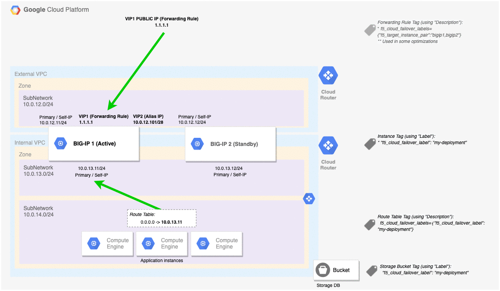
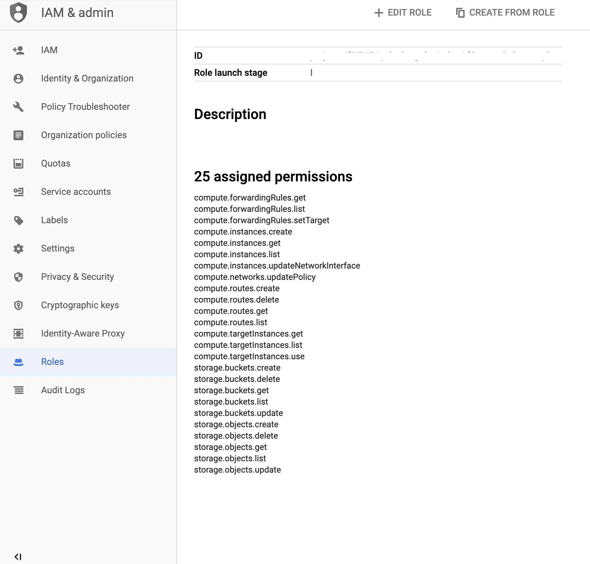
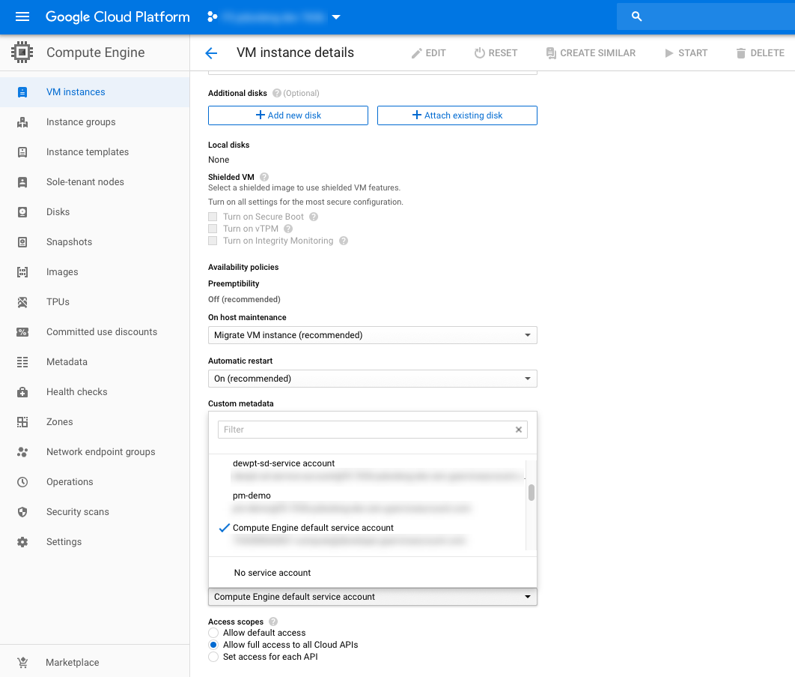
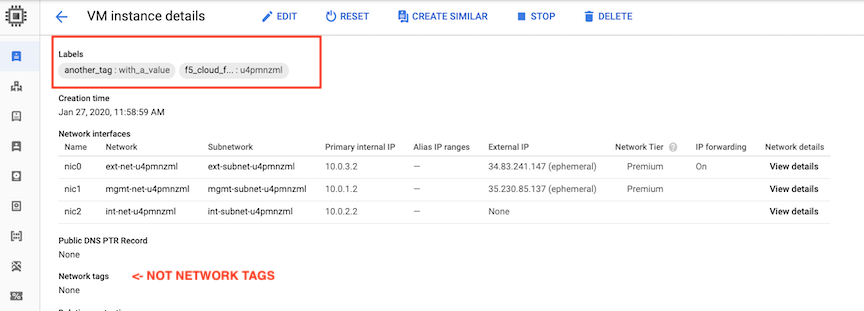

Google Cloud¶
In this section, you can see the complete steps for implementing Cloud Failover Extension in Google Cloud. You can also go straight to the Example GCP Declaration.
Google CFE Prerequisites¶
These are the basic prerequisites for setting up CFE in Google Cloud Platform:
- 2 BIG-IP systems in Active/Standby configuration. You can find an example GDM Template. Any configuration tool can be used to provision the resources.
- Virtual addresses or Self IPs created in a floating traffic group on the instances serving application traffic which will match either an Alias IP or Forwarding Rule.
- Target Instance Pair created where each target instance is pointing at a BIG-IP instance. Note that this is only required if failover of any forwarding rules is desired.
Complete these tasks to deploy Cloud Failover Extension in GCP. Before getting started, we recommend you review the Known Issues and Frequently Asked Questions (FAQ). To see how to run CFE on GCP when BIG-IP instances have no route to public internet, see CFE in Isolated Environments.
| Step | Task |
|---|---|
| Create and assign an IAM Role | |
| Modify and POST the Example GCP Declaration | |
| Update or Revert Cloud Failover Extension |
GCP Failover Event Diagram¶
This diagram shows a failover event with Cloud Failover implemented in Google Cloud. In the event of a failover, alias IPs are updated to point to the network interface of the active BIG-IP device. The forwarding rule targets matching a self IP address of the active BIG-IP device are associated with the network interface of the active BIG-IP device. Management NICs/VPC are not shown in this diagram.

Example GCP Declaration¶
This example declaration shows the minimum information needed to update the cloud resources in Google Cloud. See the Quickstart section for steps on how to post this declaration. See the Example Declarations section for more examples.
1 2 3 4 5 6 7 8 9 10 11 12 13 14 15 16 17 18 19 20 21 22 23 24 25 26 27 28 29 30 31 32 33 34 35 36 37 38 39 | {
"class": "Cloud_Failover",
"environment": "gcp",
"externalStorage": {
"scopingName": "myCloudFailoverBucket"
},
"failoverAddresses": {
"enabled": true,
"addressGroupDefinitions": [
{
"type": "forwardingRule",
"scopingName": "forwarding-rule-1-1-1-1",
"targetInstances": [
"ti-cluster-1-a",
"ti-cluster-1-b"
]
},
{
"type": "aliasAddress",
"scopingAddress": "10.0.12.101/28"
}
]
},
"failoverRoutes": {
"enabled": true,
"routeGroupDefinitions": [
{
"scopingName": "example-route-1",
"defaultNextHopAddresses": {
"discoveryType": "static",
"items": [
"10.0.13.11",
"10.0.13.12"
]
}
}
]
}
}
|
Create and assign an IAM Role¶
In order to successfully implement CFE in GCP, you need to have a GCP Identity and Access Management (IAM) service account with sufficient access. To create and assign an IAM role you must have a user role of Editor.
In GCP, go to IAM > Roles.
Select Create Role and fill in the required fields.
Ensure that Role launch stage is set to General Availability.
Select Add Permissions and select the required permissions.
Name Scope CFE Component Description compute.forwardingRules.get Project failoverAddresses To get information about a forwarding rule. compute.forwardingRules.list Project failoverAddresses To list the forwarding rules in a project. compute.forwardingRules.setTarget Project failoverAddresses To update the forwarding rule to use the active BIG-IP instance. compute.instances.get Project All To get information about the BIG-IP instance. compute.instances.list Project All To list the instances in a project. compute.instances.updateNetworkInterface Project All To update the instance network interface. compute.networks.updatePolicy Project All To update the network policy. compute.routes.create Project failoverRoutes To update the route to use the active BIG-IP instance as next hop. compute.routes.delete Project failoverRoutes To delete a route. compute.routes.get Project failoverRoutes To get information about a route. compute.routes.list Project failoverRoutes To list the routes in a project. compute.targetInstances.get Project failoverAddresses To get information about a target instance. compute.targetInstances.list Project failoverAddresses To list the target instances in a project. compute.targetInstances.use Project failoverAddresses To update the target instance to use the active BIG-IP instance. storage.buckets.get Project externalStorage To get information about a storage bucket for the failover state file. storage.buckets.list Project externalStorage To list the storage buckets in a project. storage.buckets.update Project externalStorage To update the storage bucket for the failover state file. storage.objects.create Project externalStorage To create the failover state file. storage.objects.delete Project externalStorage To delete the failover state file. storage.objects.get Project externalStorage To get information about the failover state file. storage.objects.list Project externalStorage To list files in a storage bucket. storage.objects.update Project externalStorage To update the failover state file. Select Create to finish creating the custom role.
Note
These permissions are also included, by default, in GCP pre-defined roles (Compute Admin and Storage Admin). As long as the service account has a role to bind to it with all the necessary permissions, then it should be sufficient. Please see your cloud provider for the latest best practices.

Bind the custom role in the step above to a service account by navigating to IAM & admin > IAM.
Select the edit icon next to the service account for binding.
Select Add Another Role and choose the custom role to add.
Select Save to update the service account.
Assign an IAM member to each instance by navigating to Compute Engine > VM Instances > Instance, select Edit, and then update the Service Account.
{kind=link}
For example:

Define your Google Cloud Infrastructure Objects¶
Define your infrastructure with the the keys and values that you will send in your CFE declaration.
Note
- GCP uses the term labels rather than the term tags, which is used by other cloud providers.
- In cases where cloud objects do not have labels (for example, Forwarding Rules and Routes), Cloud Failover will leverage the
Descriptionfield instead. Cloud Failover Extension will search theDescriptionfield/string for tags contained in the reserved stringf5_cloud_failover_labels={}. See examples below. - To see how to run CFE on GCP when BIG-IP instances have no route to public internet, see CFE in Isolated Environments.
Define Remote Storage for State File in GCP¶
Create a storage bucket in GCP for Cloud Failover Extension cluster-wide file(s).
Warning
To avoid a potential data breach, ensure the required storage buckets are properly secured and do not have public access. See your cloud provider for best practices.
Update/modify the Cloud Failover
scopingNamevalue with name of your storage bucket:"externalStorage":{ "scopingName": "yourBucketforCloudFailover" },
Alternatively, if you are using the Discovery via Tag option, label the bucket with your custom key:values in the externalStorage.scopingTags section of the CFE declaration.
"externalStorage":{ "scopingTags":{ "f5_cloud_failover_label":"mydeployment" } },
- Open the Cloud Storage browser in the Google Cloud Console.
- In the bucket list, find the bucket you want to apply a label to, and click its Bucket overflow menu (…).
- Click Edit labels.
- In the side panel that appears, click the + Add label button.
- Specify a
keyandvaluefor your label.
- Click Save.
Define the Failover Addresses in GCP¶
Update/modify the
addressGroupDefiniitionslist to match the addresses in your deployment. In the example below, there are two virtual services defined:- Virtual Service 1 (1.1.1.1): On a Forwarding Rule
- Virtual Service 2 (10.0.12.101): On an alias range
"failoverAddresses": { "enabled": true, "addressGroupDefinitions": [ { "type": "forwardingRule", "scopingName": "forwarding-rule-1-1-1-1", "targetInstances": [ "ti-cluster-1-a", "ti-cluster-1-b" ] }, { "type": "aliasAddress", "scopingAddress": "10.0.12.101/28" } ] },
Alternatively, if you are using the Discovery via Tag option, edit the declaration as shown below.
"failoverAddresses":{ "enabled":true, "scopingTags":{ "f5_cloud_failover_label":"mydeployment" } },
Label the virtual machine instances with a key and value. This key/value will correspond to the key/value you use in the failoverAddresses.scopingTags section of the CFE configuration.
Note
GCP does not have NICs as independent objects of the instance, so you only need to label the instance.
- Go to the VM instances page.
- Select an instance.
- On the VM instance details page, click Edit.
- In the Labels section, specify a name and a value
- Click Save.

By default, you do not need to tag forwarding rules. You only need to create a target instance object for each BIG-IP. CFE will match Virtual Addresses configured on the BIG-IP to any forwarding rules with same IPs pointed at a BIG-IP target instance.
Performance Note:
CFE provides additional control and performance optimizations by leveraging tags on forwarding rules.
CFE sends update requests asynchronously. For instance, if CFE updates 10 forwarding rules, Cloud Failover sends the 10 update requests all at once (instead of serially waiting for a response from the first request). By creating multiple target-instance objects for each BIG-IP and spreading requests to those, GCP backend will process the updates quicker.
To leverage this optimization, for every Forwarding Rule:
Create another target instance object for each BIG-IP instance in the cluster. For example, for Forwarding Rule 1:
gcloud compute target-instances create ti-cluster1-a-1 --instance=cluster1-a --instance-zone=us-west1-a --zone=us-west1-a gcloud compute target-instances create ti-cluster1-b-1 --instance=cluster1-b --instance-zone=us-west1-b --zone=us-west1-b
Tag the Fowarding Rule (using Description field) with the following two tags:
Deployment scoping tag: an arbitrary key-value pair that will correspond to the key-value pair in the failoverAddresses.scopingTags section of the CFE declaration.
Note
If you use our declaration example, the key-value tag would be:
"f5_cloud_failover_label":"mydeployment"Target Instance mapping tag: a key-value pair with the reserved key named
f5_target_instance_pairand a user-provided value containting the two BIG-IP target instance objects."f5_target_instance_pair":"<target-instance-1-name>,<target-instance-2-name>"
For example, if you have a failoverAddresses declaration with arbitrary
scopingTagsof"my_deployment_scoping_label":"cluster1":"failoverAddresses":{ "enabled":true, "scopingTags":{ "my_deployment_scoping_label":"cluster1" } },
and 4 forwarding rules (one IP 1.1.1.1 for four different protocols, tcp,udp,icmp,esp):
# Create unique Target Instances for each Forwarding Rule # where the BIG-IP's instance names are cluster1-a and cluster1-b # 1.1.1.1:TCP gcloud compute target-instances create ti-cluster1-a-1 --instance=cluster1-a --instance-zone=us-west1-a --zone=us-west1-a gcloud compute target-instances create ti-cluster1-b-1 --instance=cluster1-b --instance-zone=us-west1-b --zone=us-west1-b # 1.1.1.1:UDP gcloud compute target-instances create ti-cluster1-a-2 --instance=cluster1-a --instance-zone=us-west1-a --zone=us-west1-a gcloud compute target-instances create ti-cluster1-b-2 --instance=cluster1-b --instance-zone=us-west1-b --zone=us-west1-b # 1.1.1.1:ICMP gcloud compute target-instances create ti-cluster1-a-3 --instance=cluster1-a --instance-zone=us-west1-a --zone=us-west1-a gcloud compute target-instances create ti-cluster1-b-3 --instance=cluster1-b --instance-zone=us-west1-b --zone=us-west1-b # 1.1.1.1:ESP gcloud compute target-instances create ti-cluster1-a-4 --instance=cluster1-a --instance-zone=us-west1-a --zone=us-west1-a gcloud compute target-instances create ti-cluster1-b-4 --instance=cluster1-b --instance-zone=us-west1-b --zone=us-west1-b $ gcloud compute target-instances list NAME ZONE INSTANCE NAT_POLICY ti-cluster1-a-1 us-west1-a cluster1-a NO_NAT ti-cluster1-a-2 us-west1-a cluster1-a NO_NAT ti-cluster1-a-3 us-west1-a cluster1-a NO_NAT ti-cluster1-a-4 us-west1-a cluster1-a NO_NAT ti-cluster1-b-1 us-west1-a cluster1-b NO_NAT ti-cluster1-b-2 us-west1-a cluster1-b NO_NAT ti-cluster1-b-3 us-west1-a cluster1-b NO_NAT ti-cluster1-b-4 us-west1-a cluster1-b NO_NAT # Create Forwarding Rules with a Description containing Deployment Scoping Tag and Target Instance Pair mappings, pointed first at target-instance objects associated with cluster-1a. $ gcloud compute forwarding-rules create forwrule-1 --address 1.1.1.1 --target-instance='ti-cluster1-a-1' --ip-protocol=TCP --load-balancing-scheme=EXTERNAL --region us-west1 --target-instance-zone us-west1-a --description "f5_cloud_failover_labels={\"my_deployment_scoping_label\":\"cluster1\",\"f5_target_instance_pair\":\"ti-cluster1-a-1,ti-cluster1-b-1\"}" $ gcloud compute forwarding-rules create forwrule-2 --address 1.1.1.1 --target-instance='ti-cluster1-a-2' --ip-protocol=UDP --load-balancing-scheme=EXTERNAL --region us-west1 --target-instance-zone us-west1-a --description "f5_cloud_failover_labels={\"my_deployment_scoping_label\":\"cluster1\",\"f5_target_instance_pair\":\"ti-cluster1-a-2,ti-cluster1-b-2\"}" $ gcloud compute forwarding-rules create forwrule-3 --address 1.1.1.1 --target-instance='ti-cluster1-a-3' --ip-protocol=ICMP --load-balancing-scheme=EXTERNAL --region us-west1 --target-instance-zone us-west1-a --description "f5_cloud_failover_labels={\"my_deployment_scoping_label\":\"cluster1\",\"f5_target_instance_pair\":\"ti-cluster1-a-3,ti-cluster1-b-3\"}" $ gcloud compute forwarding-rules create forwrule-4 --address 1.1.1.1 --target-instance='ti-cluster1-a-4' --ip-protocol=ESP --load-balancing-scheme=EXTERNAL --region us-west1 --target-instance-zone us-west1-a --description "f5_cloud_failover_labels={\"my_deployment_scoping_label\":\"cluster1\",\"f5_target_instance_pair\":\"ti-cluster1-a-4,ti-cluster1-b-4\"}" # Before Failover (pointed at BIG-IP cluster-1a target-instances): $ gcloud compute forwarding-rules list NAME REGION IP_ADDRESS IP_PROTOCOL TARGET forwrule-1 us-west1 1.1.1.1 TCP us-west1-a/targetInstances/ti-cluster1-a-1 forwrule-2 us-west1 1.1.1.1 UDP us-west1-a/targetInstances/ti-cluster1-a-2 forwrule-3 us-west1 1.1.1.1 ICMP us-west1-a/targetInstances/ti-cluster1-a-3 forwrule-4 us-west1 1.1.1.1 ESP us-west1-a/targetInstances/ti-cluster1-a-4 # After Failover (pointed at BIG-IP cluster-1b target-instances): $ gcloud compute forwarding-rules list NAME REGION IP_ADDRESS IP_PROTOCOL TARGET forwrule-1 us-west1 1.1.1.1 TCP us-west1-a/targetInstances/ti-cluster1-b-1 forwrule-2 us-west1 1.1.1.1 UDP us-west1-a/targetInstances/ti-cluster1-b-2 forwrule-3 us-west1 1.1.1.1 ICMP us-west1-a/targetInstances/ti-cluster1-b-3 forwrule-4 us-west1 1.1.1.1 ESP us-west1-a/targetInstances/ti-cluster1-b-4
Introduced in 1.6.0
In some cases you may have forwarding rules that match an IP address configured on BIG-IP, but you do not want BIG-IP to own that address. To manage only Forwarding Rules that are explicitly tagged, set requireTags to true in the CFE configuration.
"failoverAddresses":{
"enabled":true,
"requireTags": true,
"scopingTags":{
"f5_cloud_failover_label":"mydeployment"
}
},
Define the Routes in GCP¶
Update/modify the routeGroupDefinitions list to the desired route tables and prefixes to manage. The routeGroupDefinitions property allows more granular route-table operations. See Failover Routes for more information. See GCP Advanced Routing for additional examples of more advanced configurations.
"failoverRoutes":{
"enabled":true,
"routeGroupDefinitions":[
{
"scopingName":"route-table-1",
"scopingAddressRanges":[
{
"range":"0.0.0.0/0"
}
],
"defaultNextHopAddresses":{
"discoveryType":"static",
"items":[
"10.0.13.11",
"10.0.23.11"
]
}
}
]
}
Alternatively, if you are using the Discovery via Tag option, tag your NICs (see Define the Failover Addresses in GCP) and the route tables containing the routes you want to manage.
Create a key-value pair that will correspond to the key-value pair in the failoverAddresses.scopingTags section of the CFE declaration.
Note
If you use our declaration example, the key-value tag would be
"f5_cloud_failover_label":"mydeployment"In the case where BIG-IP has multiple NICs, CFE needs to know which interfaces (by using the Self-IPs associated with those NICs) it needs to re-map the routes to. You can either define the
nextHopAddressesusing an additional tag on the route or provide them statically in the Cloud Failover configuration.- If you use discoveryType
routeTag, you will need to add another tag to the route in your cloud environment with the reserved keyf5_self_ips. For example,"f5_self_ips":"10.0.13.11,10.0.23.11".
"failoverRoutes": { "enabled": true, "scopingTags": { "f5_cloud_failover_label": "mydeployment" }, "scopingAddressRanges": [ { "range": "0.0.0.0/0", "nextHopAddresses": { "discoveryType":"routeTag" } } ] }
- If you use discoveryType
static, you can provide the Self-IPs in the items area of the CFE configuration. See Failover Routes for more information.
- If you use discoveryType
Adding a Description with key:pair
Go to the Routes page in the Google Cloud Console.
Click Create route.
Specify a Name and a Description for the route.
Select an existing Network where the route will apply.
Specify a Destination IP range to define the destination of the route.
Select a Priority for the route.
Go to the Instance tags field to create a tag. For example
f5_cloud_failover_labels={"f5_cloud_failover_label":"mydeployment"}.Select a Next hop for the route and Specify a forwarding rule of internal TCP/UDP load balancer to specify the BIG-IP as a next hop.
Tip
Make sure the route targets a
next-hop-addressinstead of anext-hop-instance.Click Create.
In your CFE declaration, enter the key/value in the failoverRoutes.scopingTags section that matches the tag that you attached to the routing table in GCP. Then update the list of destination routes in the failoverRoutes.scopingAddressRanges section.
Adding a Description with gcloud CLI
gcloud compute routes create example-route-1 --destination-range=0.0.0.0/0 --network=example-network --next-hop-address=10.0.13.11 --description='f5_cloud_failover_labels={"f5_cloud_failover_label":"mydeployment"}'
Example Virtual Service Declaration¶
See below for example Virtual Services created with AS3 in GCP Failover Event Diagram above:
1 2 3 4 5 6 7 8 9 10 11 12 13 14 15 16 17 18 19 20 21 22 23 24 25 26 27 28 29 30 31 32 33 34 35 36 37 38 39 40 41 42 43 44 45 46 47 48 49 50 51 52 53 54 55 56 57 58 59 60 61 62 63 64 65 66 67 68 69 70 71 72 73 74 75 76 77 78 79 80 81 82 83 84 85 86 87 88 89 90 91 92 93 94 95 96 97 98 99 100 101 102 103 104 105 106 | {
"remark":"AS3_GCP",
"schemaVersion":"3.0.0",
"label":"AS3_GCP",
"class":"ADC",
"Tenant_Shared_Services":{
"class":"Tenant",
"Shared_Services":{
"class":"Application",
"template":"generic",
"vs_wildcard_forwarding":{
"class":"Service_Forwarding",
"remark":"Outbound Wildcard Forwarding Virtual Server",
"virtualAddresses":[
[
"0.0.0.0",
"0.0.0.0/0"
]
],
"virtualPort":"0",
"forwardingType":"ip",
"layer4":"any",
"snat":"auto",
"allowVlans":[
{
"bigip":"/Common/internal"
}
]
}
}
},
"Tenant_1":{
"class":"Tenant",
"Service_1":{
"class":"Application",
"template":"https",
"serviceMain":{
"class":"Service_HTTPS",
"remark":"Service 1 mapped to GCP Forwarding Rule",
"virtualAddresses":[
"1.1.1.1"
],
"snat":"auto",
"serverTLS":{
"bigip":"/Common/clientssl"
},
"redirect80":false,
"pool":"Service_1_Pool"
},
"Service_1_Pool":{
"class":"Pool",
"remark":"Pool for Service 1 mapped to GCP Forwarding Rule",
"members":[
{
"servicePort":80,
"serverAddresses":[
"10.0.14.101",
"10.0.14.102",
"10.0.14.103"
]
}
],
"monitors":[
"http"
]
}
}
},
"Tenant_2":{
"class":"Tenant",
"Service_2":{
"class":"Application",
"template":"https",
"serviceMain":{
"class":"Service_HTTPS",
"remark":"Service 2 mapped to AliasIP",
"virtualAddresses":[
"10.0.12.101"
],
"snat":"auto",
"serverTLS":{
"bigip":"/Common/clientssl"
},
"redirect80":false,
"pool":"Service_2_Pool"
},
"Service_2_Pool":{
"class":"Pool",
"remark":"Pool for Service 2 mapped to Alias IP",
"members":[
{
"servicePort":80,
"serverAddresses":[
"10.0.14.104",
"10.0.14.105",
"10.0.14.106"
]
}
],
"monitors":[
"http"
]
}
}
}
}
|
GCP Private Endpoints¶
To see how to run CFE on GCP when BIG-IP instances have no route to public internet, see CFE in Isolated Environments.
Note
To provide feedback on Cloud Failover Extension or this documentation, you can file a GitHub Issue.